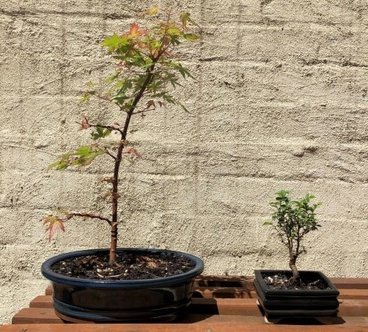
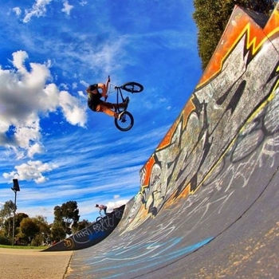

Gardening
I love to be in my garden. Among the vegetables I grow, I have begun the art of Bonsai and currently have a Chinese Elm and a Japanese Maple tree.
BMX
I am an avid cyclist, especially BMX bikes. I have been doing this for around 15 years and have travelled all around Australia to ride.
